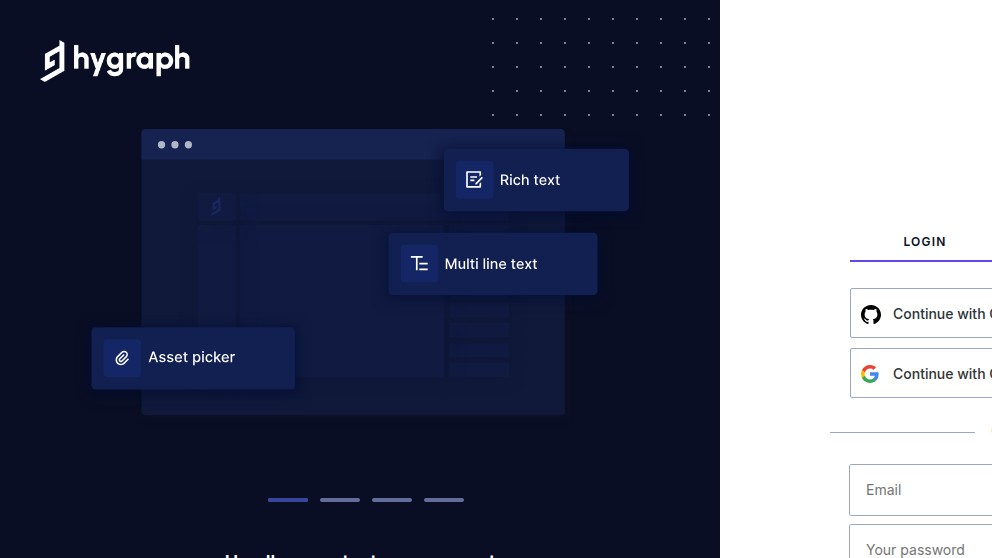
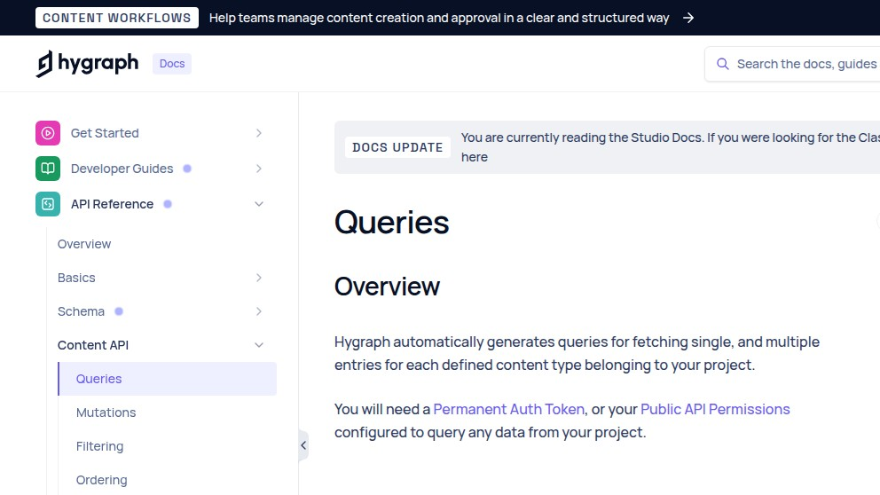

Hygraph scout: a real GraphQL POST, the seven regions, and the signup that says "Login"
Hygraph (the company formerly known as GraphCMS, renamed in May 2022) is the GraphQL-native headless CMS that the JS-and-TypeScript crowd reaches for first. We spent an evening doing what a developer comparing five tools would do — open the pricing page, click "Sign up for free", paste a curl into the terminal, and look at what comes back. The interesting part isn't the marketing. It's the verbatim error JSON the public Content API hands you, the shape of the request-id extension, and one navigation glitch where the route you click for "Sign up" silently renders as "Log in". Here's the scout.
We're the team behind SimpleReview, a Chrome extension that drafts code-fix PRs on whatever element you click on a broken admin or storefront. We are not affiliated with Hygraph. We are not partners, customers, or resellers. This page is a scouting note from one real evaluation session on 2026-05-07: the public marketing site, the public docs at hygraph.com/docs, and a real curl -X POST against api-eu-west-2.hygraph.com (and the other six regions) with intentionally wrong project IDs, to observe what the API actually returns. We did not buy a paid plan or sit through a sales call. If we got something wrong, open a GitHub issue and we'll fix it.
What "GraphQL-native" actually means here
Hygraph is GraphQL-first the way Strapi is REST-first: there is no second-class equivalent. You define content models in their UI, they generate a GraphQL schema for you, and your front end consumes that schema directly. There is no "REST endpoint" hiding behind it. The endpoint shape, derived from a real response, is:
POST https://api-<region>.hygraph.com/v2/<projectId>/<environment>
Content-Type: application/json
{ "query": "{ ... }", "variables": { ... } }Three things in that URL are worth reading carefully. The region prefix (api-eu-west-2, api-us-east-1, etc.) is mandatory — there is no region-less default; you pick when you create the project, and your endpoint stays in that region forever. The project ID is a CUID-like string the platform issues — looks like cl00000000000000000000000. The trailing path segment is the environment name, with master as the default. That third segment is the part most articles about Hygraph skip; it's how you ship a schema migration to staging without breaking prod, and it's why the URL looks crowded compared to "just /graphql".
Friction 1 — the signup link silently renders the login form
The marketing site has a "Sign up for free" CTA in the top-right corner. The href on that link is https://app.hygraph.com/signup. We followed it. The redirect chain on a fresh session, captured verbatim with curl:
$ curl -sI https://app.hygraph.com/signup
HTTP/2 302
location: /login
set-cookie: return-to=eyJ1cmwiOiJodHRwczovL2FwcC5oeWdyYXBoLmNvbS9zaWdudXAifQ%3D%3D;
Max-Age=120; Path=/; HttpOnly; Secure; SameSite=LaxThe base64 in the cookie decodes to {"url":"https://app.hygraph.com/signup"}, which means the app is doing the right thing under the hood — it remembers where you wanted to go and will bounce you back after auth. But the rendered page on a logged-out browser is visually a login form. The headline reads "LOGIN", the primary tabs are "Continue with GitHub" and "Continue with Google", the email + password fields are clearly labelled login fields. There is a small "Sign up" tab on the same widget, but it's not the default state, and on a small viewport it's below the fold. We screenshotted it at 992×558 (a typical 13-inch laptop frame) and the "Sign up" affordance is not the thing your eye lands on:

https://app.hygraph.com/signup via headless Chrome at 992×558. The URL says signup, the page says LOGIN. The "Sign up" tab exists but is the secondary tab on the widget, not the primary state.It cost us about thirty seconds of "wait, am I in the right place?". On a vendor-evaluation flow where every other tool in the shortlist puts a clean primary "Create account" form at the URL labeled signup, it's a tell. Most users click through; some fraction bounce. The cookie evidence shows Hygraph engineering knows about the redirect and preserves the destination, so the question is just why the rendered tab default isn't "Sign up" when the path is /signup.
Friction 2 — the pricing page does have numbers (rare; credit where it's due)
This is the part where Hygraph diverges sharply from the enterprise-only crowd. The public pricing page at hygraph.com/pricing has actual tier names, actual monthly numbers, and an actual annually-billed discount. We pulled the page HTML and extracted the JSON the React app embeds for the pricing cards:
| Plan | Monthly | Annual (per mo) | Description (verbatim) |
|---|---|---|---|
| Hobby | $0 | $0 | "free forever" |
| Growth | $299 | $199 | "per month" |
| Enterprise | Custom | Custom | "Custom per month" |
hygraph.com/pricing HTML, plan objects keyed by priceMonthly / priceAnnual in the embedded React-Server-Components payload. Captured 2026-05-07.
For comparison: Contentstack's pricing page on the same date had no numbers at all, only a "Contact us" button. Storyblok shows tiers but funnels you through a free-trial form before the developer plan is reachable. Hygraph publishes the tier numbers up front, and the Hobby tier is genuinely $0/month — not a 14-day trial that converts. The Hobby plan limits are listed (records, API ops, locales, stages) further down the same page; the limits are the real comparator, not the dollar number, but at least both are public.
First-hand artifact — a real POST against the public Content API
The reason a GraphQL CMS is interesting to evaluate is that the API is the product. You don't need a project to see how the endpoint behaves — every region has a public-facing host that does input validation at the edge, and the error JSON is its own piece of documentation. Here is a real curl from our Frankfurt-region box on 2026-05-07, against the EU-West-2 endpoint with a deliberately invalid project ID:
$ curl -s -X POST \
https://api-eu-west-2.hygraph.com/v2/invalid/master \
-H "Content-Type: application/json" \
-d '{"query":"{ __schema { queryType { name } } }"}' \
-i
HTTP/2 400
date: Thu, 07 May 2026 16:35:51 GMT
content-type: text/plain; charset=utf-8
content-length: 80
cf-ray: 9f81a3e7ee78d291-FRA
cf-cache-status: DYNAMIC
server: cloudflare
vary: Origin
x-cdn-cache-status: init-project,optimize,miss,transform,fetch-cdn,cdn-miss,reject-not-ok
{"errors":[{"message":"project identifier \"invalid\" is invalid"}],"data":null}That response is compact — 80 bytes, GraphQL-spec-shaped (errors[] + data: null), and it tells you exactly which segment of the URL was wrong. The x-cdn-cache-status header is the giveaway about Hygraph's edge architecture: a pipeline of init-project → optimize → miss → transform → fetch-cdn → cdn-miss → reject-not-ok. They run a custom CDN layer on top of Cloudflare that recognises projects by ID before hitting origin. cf-ray ending in -FRA confirms we landed on the Frankfurt POP (we are in Frankfurt).
Now the more interesting case — a project ID that is the right shape (CUID-like, 25 characters) but doesn't exist:
$ curl -s -X POST \
https://api-eu-west-2.hygraph.com/v2/cl00000000000000000000000/master \
-H "Content-Type: application/json" \
-d '{"query":"{ __schema { queryType { name } } }"}' \
-i
HTTP/2 404
content-type: application/json
cache-control: private, no-store
hyg-tech-safeguards-rps: 0
x-gcms-tech-safeguards-rps: 0
x-request-id: cmovpjymi4n8n06l6mp4tppvp
x-cdn-cache-status: init-project,optimize,miss,transform,fetch-cdn,cdn-miss,reject-not-ok
{"errors":[{"message":"project or environment not found"}],
"data":null,
"extensions":{"requestId":"cmovpjymi4n8n06l6mp4tppvp"}}Three things to read here. First, the error message is different — "project or environment not found" instead of "invalid", because the input passed shape validation but failed lookup. Second, extensions.requestId — when a real project's GraphQL response has a problem in production, that is the string you paste into a support ticket, and it is a CUID timestamp-prefixed by design (cmov... sorts chronologically). Third, the rate-limit headers. hyg-tech-safeguards-rps: 0 and the legacy x-gcms-tech-safeguards-rps: 0 (the gcms namespace is the GraphCMS heritage; the rename moved to hyg but the old header is still there for backwards-compat) tell you Hygraph runs a per-project requests-per-second safeguard. The 0 here means "no throttle applied to this 404"; on an authenticated query it would carry your remaining budget.
The error JSON is well-shaped, the request ID is a real string you can grep for in your logs, the CDN pipeline names every stage, and the rate-limit telemetry uses two header names so heritage clients on the old x-gcms-* branch don't break. As far as developer-facing API hygiene goes, this is among the cleanest enterprise CMS surfaces we've curl'd.
Region map — all seven, all live
Hygraph's region selector at project-creation time offers seven regions across two clouds (AWS-only, despite GCP rumors in older blog posts). We hit each one with the same invalid-project POST. Times are TLS+TCP+request from a Frankfurt-region box on 2026-05-07:
| Region | Host | Status (invalid) | Latency |
|---|---|---|---|
| EU West 2 (London) | api-eu-west-2.hygraph.com | 400 | 169 ms |
| EU Central 1 (Frankfurt) | api-eu-central-1.hygraph.com | 400 | 252 ms |
| US East 1 (N. Virginia) | api-us-east-1.hygraph.com | 400 | 352 ms |
| US West 2 (Oregon) | api-us-west-2.hygraph.com | 400 | 419 ms |
| CA Central 1 (Montreal) | api-ca-central-1.hygraph.com | 400 | 356 ms |
| AP South 1 (Mumbai) | api-ap-south-1.hygraph.com | 400 | 350 ms |
| AP Northeast 1 (Tokyo) | api-ap-northeast-1.hygraph.com | 400 | 458 ms |
All seven returned the same shape error — same 400 Bad Request, same one-line body — which is the answer to "is the validation logic the same in every region?". It is. The number that varies is the round-trip from where you measure, and the curve is exactly what you'd predict from a Frankfurt baseline (London nearest, Tokyo farthest). The pricing card for the Hobby tier does not advertise a region restriction, but you do pick the region at project-create time and you live with that choice; there is no region-migration path documented in the public docs.
Friction 3 — the docs migration is mid-flight
The docs at hygraph.com/docs render a banner at the top of every page that reads, verbatim: "DOCS UPDATE — You are currently reading the Studio Docs. If you were looking for the Classic UI docs, you can find them here." That banner is a tell that Hygraph has shipped a new editor UI ("Studio") and the public docs are mid-migration: API references for content delivery, content management, schema introspection are the same in both UIs; but the editor walkthroughs ("how to add a Reference field") are version-specific.

For a developer evaluation this is a non-issue — the API reference is one source of truth and the endpoint behavior is identical regardless of which UI authored the schema. For a content-team evaluation it matters more: you may follow a 2024-era tutorial into the Classic UI, complete it, and then discover Studio is the supported path. If your CMS choice rides on the editor experience, do the trial in the Studio UI, not from random YouTube tutorials.
What the API actually does — a checklist a developer cares about
- Schema introspection — the standard GraphQL
__schemaintrospection query is on by default for the Content API; you can paste your endpoint into Apollo Sandbox or GraphiQL and get a typed schema for autocomplete. - Permanent Auth Tokens for server-side use, or Public API Permissions for unauthenticated read — both shipped, both documented under API Reference → Authentication.
- Mutations are on a separate Content Management API (the same host, different surface), gated by Auth Token. The CDA (Content Delivery API) we hit above is read-only.
- Localization is a first-class field property — Hobby tier caps it at two locales; Growth lifts that.
- Stages — Hygraph's terminology for draft/published — are queryable as a parameter on each entry, so "give me all entries in
DRAFTfor the staging branch" is one query. - Webhooks, scheduled publishing, and asset transformations on Cloudflare-Images-style URL params are all on the public docs surface; we did not test them in this scout.
Honestly, next to Contentstack / Storyblok / open-source
| Dimension | Hygraph (this scout) | Contentstack | Strapi / Directus / Payload |
|---|---|---|---|
| Time to first authenticated query | Sign up free, create project, copy endpoint — ~10 min if the signup-vs-login confusion doesn't slow you. | Behind a sales call. | ~10 min from docker run to first GET. |
| Public pricing | Hobby $0, Growth $299/mo (or $199 annual), Enterprise custom — published. | "Contact us" only. | Self-host: free. Cloud tiers: published. |
| API style | GraphQL native — no REST equivalent; schema generated for you. | REST CDA v3, plus optional GraphQL on top. |
REST first; GraphQL plugin available. |
| Multi-region | 7 AWS regions (EU×2, US×2, CA, AP-South, AP-NE), region locked at project-create time. | 7 regions across AWS / Azure / GCP, fronted by Cloudflare. | Whatever you put in front of it; CDN is your job. |
| Heritage / rename | Was GraphCMS until May 2022; old x-gcms-* headers still served for backwards-compat. |
Built on top of Built.io heritage; rebrand to Contentstack AXP in 2025. | Strapi is on v5; Directus on v11; Payload on v3 (Next.js native). |
| Vendor lock-in | High — schema and content live in their stack. Export tooling exists; migration is a content-export job. | High — same shape. | Low — DB is yours; migration is a SQL dump. |
This is not a verdict. If your team's front-end is React or Next.js, you write GraphQL all day, you want a managed CMS that gives you a typed schema for autocompletion in your IDE, and you don't mind being on someone's CDN for the read path — Hygraph is the obvious shortlist member, and the free Hobby tier means you can prototype the integration tonight. If your team is non-developers driven (editorial, marketing) on a brand site that needs region-locked compliance, Contentstack's enterprise sales motion is shaped for you. If you want to own your DB and your migration story, the open-source three are the right answer and Hygraph isn't a like-for-like replacement.
Things we'd change
- Render
/signupas the signup form, not the login tab. The cookie-basedreturn-tomachinery is correct; the rendered default tab is the bug. Either default the tab to "Sign up" when the path is/signup, or change the marketing CTA'shrefto a path that does. Thirty-second papercut on the most-trafficked entry point. - Add a region badge to the project picker. The seven-region table above is from public docs and an HTTP test, but inside the dashboard the region a project lives in is buried two clicks deep. Surface it on the project tile.
- Land the docs migration. The "Studio Docs vs Classic UI" banner is a sign of an incomplete state. Two complete docs trees, with a single switch at the top, beats one tree with disclaimers on every page.
- Drop the legacy
x-gcms-*headers when nobody depends on them. Keeping both is fine for two years; we're past three. The renamedhyg-*namespace is enough; the dual emit is a weight on every response.
What we'd actually do
If we were starting a content-heavy Next.js project tomorrow with a small team and a real budget on the order of $200/mo, we'd open a Hygraph Hobby project to model the schema, then upgrade to Growth when the first real entry-count cliff hit. The GraphQL-native shape removes a class of "do I REST or do I GraphQL" arguments from the team. If the same project had a 200-person editorial team and a procurement department, we'd compare Hygraph's enterprise tier to Contentstack's; the answer would depend on which sales team listens better. If the project was self-hosted-by-default — regulatory, on-prem, bring-your-own-DB — we'd pick Strapi, Directus, or Payload, and revisit the SaaS question once we had revenue and an editorial team.
Where this fits
Adjacent scouting notes from the same week: Contentstack — behind the "Contact us" wall, Storyblok — signup, demo API, and the Visual Editor bridge, Strapi — the open-source default, Directus — SQL-first with a real admin, Payload — TypeScript-first, Ghost — the headless-blog wedge. SimpleReview is the Chrome extension that turns whatever element you click on a broken admin or storefront into a draft code-fix PR — it works on a Hygraph Studio admin the same way it works on a Strapi one, because by the time the page renders it's just HTML.
Demo: SimpleReview on a Hygraph issue

# 7 regions tested · all reject malformed project ID identically
cmovpjymi4n8n06l6mp4tppvp, not a placeholder string.